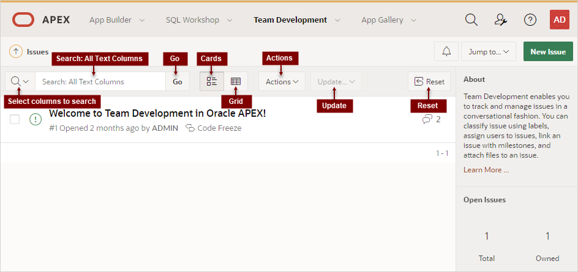
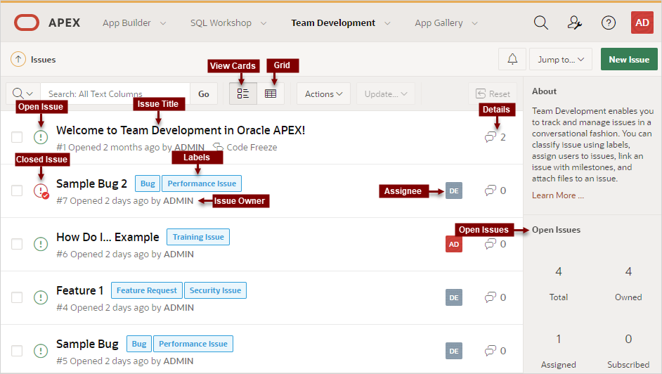

5.2.1 Issues Page
Use the Issues page to view issues.
The Issues page displays all issues being tracked in Team Development.
Navigation Bar
Description of the illustration issue_nav_bar.png
A navigation bar displays at the top of the Issues page and contains the following controls.
-
Select columns to search - This control features a menu with a magnifying glass. Click this menu to narrow your search to only specific columns. To search all columns, select All Text Columns.
-
Search: All Text Columns - Enter case insensitive search criteria (wildcard characters are implied) and click Go.
-
Go button - Executes a search or applies a filter.
-
View icons. Use these icons to toggle between two views:
-
Cards (default) - Displays issue details as card.
-
Grid - Displays issues in an interactive grid report.
To view issue details, click the issue title. To update status, assignees, labels, or milestones in either view, select the issue and then appropriate option on the Update menu.
-
-
Actions menu - Use the Actions menu to customize the report.
-
Update. Update multiple issues at once by selecting them and then selecting an option from the Actions menu. Update menu options include:
-
Status - Apply a status (Open or Closed) to all selected issues.
-
Assignees - Add or remove assignees for all selected issues.
-
Labels - Assign or remove labels for all selected issues.
-
Milestones - Assign or remove milestones for all selected issues.
Tip:
To view or edit an issue (including adding issue comments), click issue title.
-
-
Reset - Click the Reset button to remove any customizations, such as filters or sorting, Select this option to reload the report definition from the server.
See Also:
List of Issues
Issues appear next and can be viewed as Cards or as an interactive grid. Click the View Cards and Grid icons to change the display. This example shows View Cards.
Description of the illustration issue_list.png
Key features of the Cards view include:
-
Issue Title - Click the issue title to view and update details.
-
Open Issue/Closed Issue icons - Displays the status of the issue. The Open Issue icon appears as a green circle around an exclamation point. The Closed Issue icon displays as a red circle around an exclamation point and a check mark.
-
Issue Owner - Displays beneath the issue title.
-
Labels - Assigned labels display to the right of the issue title. The color indicates the associated label group.
-
Assignee - The assignees or an issue appear to the right of the labels.
-
Issue Details - Click the Comment icon/number on the far right to link to the Issue Details. The number indicates the number of issue comments.
Open Issues and Feedback Regions
Summary regions display on the right-side of the page. The Open Issues summary region includes the following:
-
Total - Total issues in the workspace.
-
Owned - Total issues owned by the current user.
-
Assigned - Total issues assigned to the current user.
-
Subscribed - Total issues to which the current user subscribes.
The Feedback summary region displays on the bottom right of the page and includes the following:
-
Total - Total feedback entries.
-
Open - Total open feedback entries.
See Also:
Parent topic: 新建和更新问题